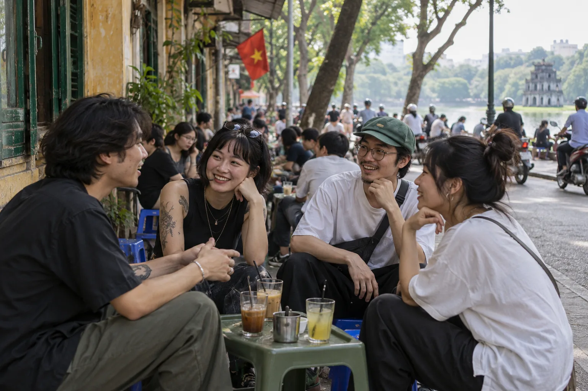

● TOP STORIES01 / 05
Independent journal concept. Stories and imagery are illustrative.

Three perspectives, one city.
Choose a desk to explore a different part of this imagined edition.
ESSAY · CONCEPT
A city made for conversation
Independent journal concept. Stories and imagery are illustrative.
Long readCulture
The city is a conversation.
Inside the independent studio
A place to browse and belong
Looking closely at the places we share.
An imagined journal about the details, practices and people that shape everyday urban life.
EXPLORE THE JOURNAL ↗The gathering
A closer look at the places that invite people to meet.
The everyday
Small routines shape how a neighbourhood feels.
The shared space
A place becomes meaningful through the people who use it.
The next chapter
An invitation to imagine a more welcoming city.
Design
Ideas made by hand.
The patient rhythm of making
What a creative space can make possible.
Independent journal concept. Stories and imagery are illustrative.
From the imagined edition.
A city made for conversation
Independent journal concept. Stories and imagery are illustrative.
Inside the independent studio
Independent journal concept. Stories and imagery are illustrative.
A place to browse and belong
Independent journal concept. Stories and imagery are illustrative.
The patient rhythm of making
Independent journal concept. Stories and imagery are illustrative.
The spaces between buildings
Independent journal concept. Stories and imagery are illustrative.
The details we keep.
An imagined reflection on the craft and memory of a city.
A city belongs to everyone who lives in it.
Independent journal concept. Stories and imagery are illustrative.
A place to pause.
An imagined perspective on the value of shared space.
Making room to meet.
A concept about the everyday places that bring people together.
The details we keep.
An imagined reflection on the craft and memory of a city.
THE LISTENING ROOM · CONCEPT
The city, in its own words.
A proposed audio series about the sounds and stories of everyday urban life.
01Listening to the morning marketEPISODE CONCEPT
An imagined episode about the rhythm of a neighbourhood market.
Concept only; no audio is available.
02A neighbourhood after darkEPISODE CONCEPT
An imagined episode about shared spaces after sunset.
Concept only; no audio is available.
03The sounds of makingEPISODE CONCEPT
An imagined episode about the sounds of everyday craft.
Concept only; no audio is available.
ABOUT THIS EDITION
A closer look at everyday places.
Nếp is an independent portfolio concept imagining a journal about urban culture, shared spaces and the people who shape them.
CITYCULTUREDESIGN
Explore the newsletter
This is a portfolio demo. No message or booking is sent.
Demo complete. Nothing was sent or saved.